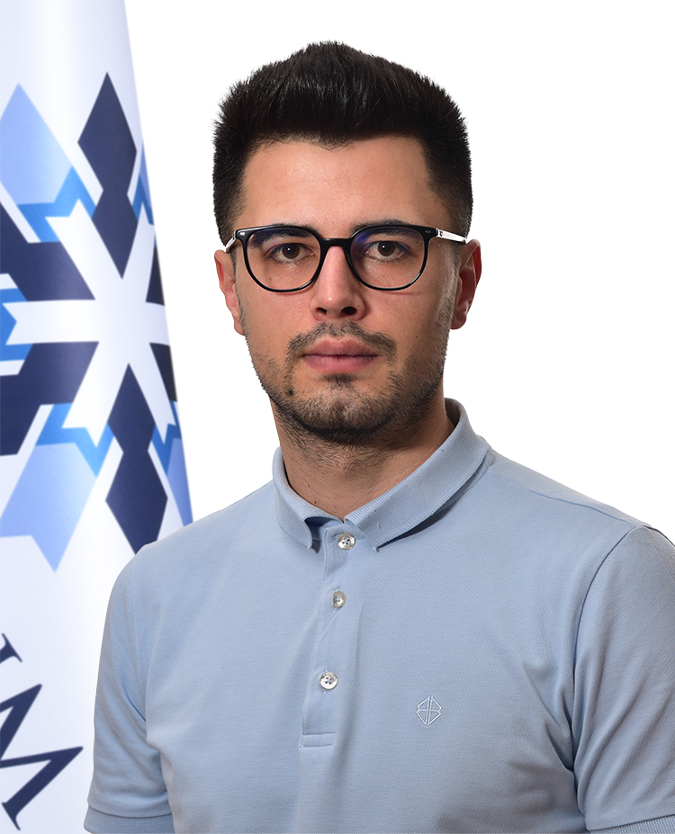

Spor Bilimi · Performans · Eğitim
Salih Çabuk
Spor bilimleri, hareket analizi, biyomekanik ve uygulamalı araştırma metodolojisi alanlarında çalışan akademik profil.
Eğitim geçmişi
Doktora eğitimine Atatürk Üniversitesi Kış Sporları ve Spor Bilimleri Enstitüsü Beden Eğitimi ve Spor programında devam etmektedir.
Yüksek lisans eğitimini Ankara Yıldırım Beyazıt Üniversitesi Sağlık Bilimleri Enstitüsü Beden Eğitimi ve Spor programında tamamlamıştır. Yüksek lisans tezinde Hip Thrust ve Glute Bridge egzersizleriyle oluşturulan post-aktivasyon potansiyasyonunun yatay kuvvet-hız profili ve sprint performansı üzerindeki etkilerini incelemiştir.
Erasmus+ öğrenim hareketliliği kapsamında Martin Luther University of Halle-Wittenberg'de Training and Movement Sciences alanında iki dönem eğitim almış; istatistik, araştırma metodolojisi ve istatistiksel makine öğrenmesi konularında akademik deneyim kazanmıştır.
Lisans eğitimini Ankara Yıldırım Beyazıt Üniversitesi Egzersiz ve Spor Bilimleri bölümünde tamamlamıştır.